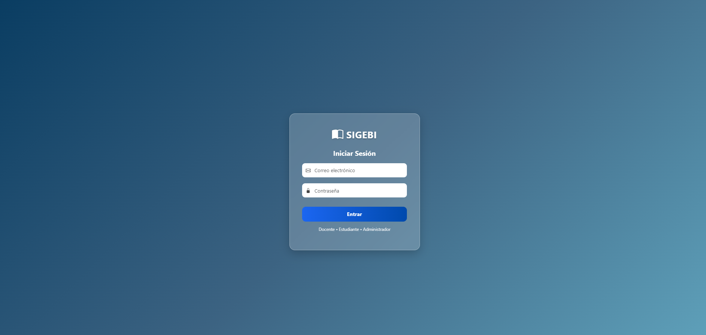
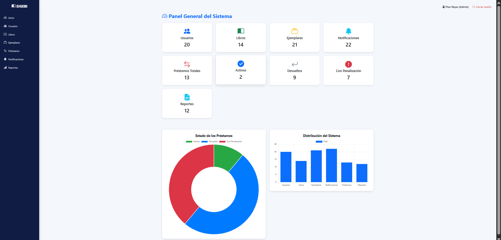
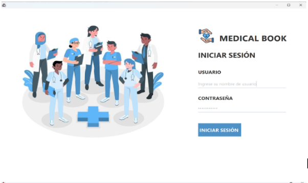
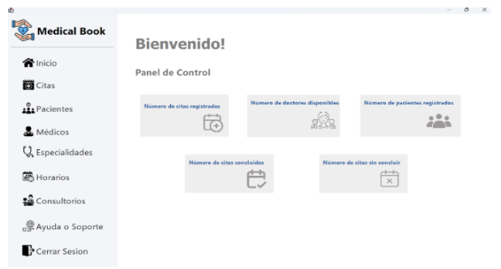

Sistema de Gestión de Biblioteca
SIGEBI es una aplicación web que permite a bibliotecarios registrar libros, gestionar préstamos, devolver ejemplares, emitir reportes y administrar usuarios. Esta disponible en la red institucional y cuenta con acceso por roles.


Sistema de Gestión de Citas
Medical Book es una aplicación web diseñada para gestionar citas médicas, administrar pacientes, controlar la disponibilidad de doctores y generar reportes, optimizando los procesos administrativos y mejorando la eficiencia en la atención al usuario.